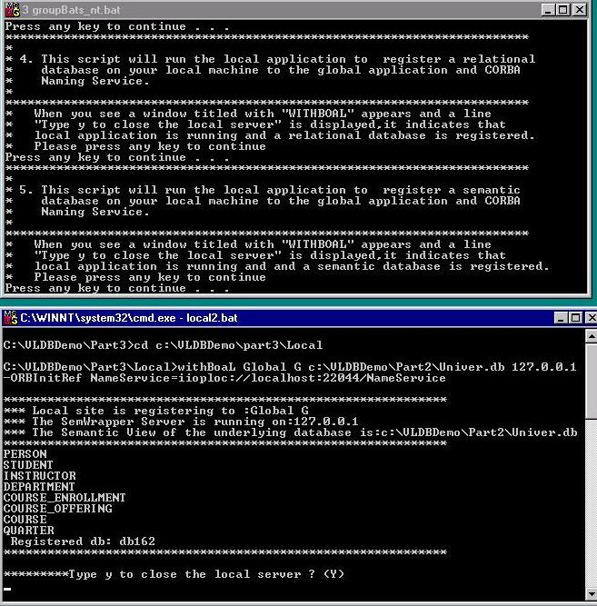

Next, we register a semantic database running on a
local site, which will be accessed directly by the Semantic Control Server,
to the global site and the CORBA Naming Service. As before, the lower window
shows that the semantic schema of the local database is also captured.
